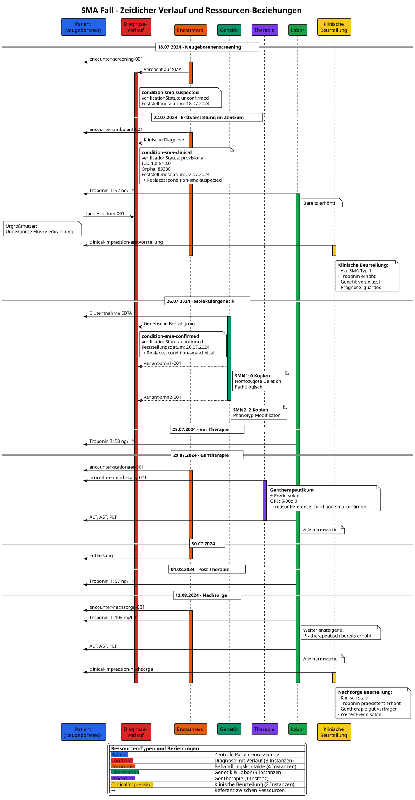

MII IG Kerndatensatz-Modul Seltene Erkrankungen
2027.0.0-ballot -
Germany
MII IG Kerndatensatz-Modul Seltene Erkrankungen
2027.0.0-ballot -
Germany
MII IG Kerndatensatz-Modul Seltene Erkrankungen - Local Development build (v2027.0.0-ballot) built by the FHIR (HL7® FHIR® Standard) Build Tools. See the Directory of published versions
Dieses Dokument enthält die semantischen Annotationen für ein Fallbeispiel einer Spinalen Muskelatrophie (SMA) bei einem Neugeborenen.
| Ressource ID | Typ | Beschreibung | Datum | Status/Details |
|————–|—–|————–|——-|—————-|
| patient-sma-001 | Patient | Neugeborenes Mädchen | Geburt: ~01.07.2024 | ID: SMA-2024-001 |
| family-history-001 | FamilyMemberHistory | Urgroßmutter mit Muskelerkrankung | 22.07.2024 | Relation: unsicher |
| Ressource ID | Typ | Beschreibung | Feststellungsdatum | Verification Status | Codes |
|————–|—–|————–|——————-|——————-|——–|
| condition-sma-suspected | Condition | Verdacht auf SMA | 18.07.2024 | unconfirmed | SNOMED: 80854005 |
| condition-sma-clinical | Condition | Klinische Diagnose SMA Typ 1 | 22.07.2024 | provisional | ICD-10: G12.0, Orpha: 83330 |
| condition-sma-confirmed | Condition | Bestätigte SMA Typ 1 | 26.07.2024 | confirmed | ICD-10: G12.0, Orpha: 83330 |
| Ressource ID | Typ | Test/Gen | Befund | Datum | Interpretation |
|————–|—–|———-|———|——-|—————-|
| observation-sma-screening | Observation | SMA Neugeborenenscreening (LOINC: 92005-8) | SMN1 Exon 7 nicht nachweisbar | 18.07.2024 | Positiv für SMA |
| variant-smn1-001 | Observation | SMN1 (HGNC:11117) - Konfirmatorisch | 0 Kopien (Deletion) | 26.07.2024 | Pathologisch, krankheitsursächlich |
| variant-smn2-001 | Observation | SMN2 (HGNC:11118) - Konfirmatorisch | 2 Kopien | 26.07.2024 | Phänotyp-Modifikator |
| Ressource ID | Typ | Beschreibung | Datum | Code | Details |
|————–|—–|————–|——-|——|———|
| procedure-gentherapy-001 | Procedure | Gentherapie (Onasemnogene abeparvovec) | 29.07.2024 | OPS: 6-00d.0, UNII: MLU3LU3EVV | Mit Prednisolon, ohne Komplikationen |
| Ressource ID | Typ | Parameter | Datum | Wert | Interpretation |
|————–|—–|———–|——-|——|—————-|
| observation-troponin-001 | Observation | Troponin T hs | 22.07.2024 | 92 ng/l | Erhöht |
| observation-troponin-002 | Observation | Troponin T hs | 28.07.2024 | 58 ng/l | Erhöht |
| observation-troponin-003 | Observation | Troponin T hs | 01.08.2024 | 57 ng/l | Erhöht |
| observation-troponin-004 | Observation | Troponin T hs | 12.08.2024 | 106 ng/l | Erhöht |
| observation-alt-001 | Observation | ALT | 29.07.2024 | - | Normwertig |
| observation-ast-001 | Observation | AST | 29.07.2024 | - | Normwertig |
| observation-plt-001 | Observation | Thrombozytenzahl | 29.07.2024 | - | Normwertig |
| Ressource ID | Typ | Beschreibung | Datum | Setting | Verknüpfte Diagnose |
|————–|—–|————–|——-|———|——————-|
| encounter-screening-001 | Encounter | Neugeborenenscreening | 18.07.2024 | Screening | condition-sma-suspected |
| encounter-ambulant-001 | Encounter | Erstvorstellung SMA-Zentrum | 22.07.2024 | Ambulant | condition-sma-clinical |
| encounter-stationaer-001 | Encounter | Stationäre Gentherapie | 29-30.07.2024 | Stationär | condition-sma-confirmed |
| encounter-nachsorge-001 | Encounter | Nachsorge | 12.08.2024 | Ambulant | condition-sma-confirmed |
| Ressource ID | Typ | Beschreibung | Datum | Encounter | Wichtige Befunde |
|————–|—–|————–|——-|———–|——————|
| clinical-impression-erstvorstellung | ClinicalImpression | Initiale klinische Beurteilung | 22.07.2024 | encounter-ambulant-001 | Familienanamnese, Troponin ↑, V.a. SMA Typ 1 |
| clinical-impression-nachsorge | ClinicalImpression | Nachsorgebeurteilung nach Gentherapie | 12.08.2024 | encounter-nachsorge-001 | Troponin weiter ↑ (präexistent), ALT/AST/PLT normal |
| Ressource ID | Typ | Beschreibung | Anzahl Einträge |
|————–|—–|————–|—————–|
| bundle-sma-complete | Bundle | Transaction Bundle mit allen Ressourcen | 22 Ressourcen |
Die vollständigen FHIR-Ressourcen sind in den FSH-Quellen dieses Moduls definiert (input/fsh/Beispiel_SMA/), inklusive Transaction Bundle.

